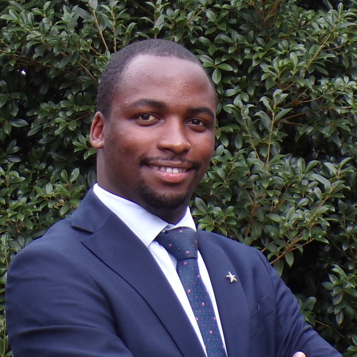

A mentor-led USMLE Step 1 cohort starting June 1. Daily classes Monday to Sunday, full First Aid 2025 walkthrough paired with UWorld clinical vignettes, and end-to-end mentorship through ECFMG and the residency match.

Allan finished medical school at Makerere University, completed a Master's in Global Health at Duke, and is starting PGY-1 Neurology training at Creighton University this summer. While at Duke he served as a teaching assistant for Epidemiology & Biostatistics, and has spent the last two years leading daily USMLE study groups. He has walked the IMG path himself — from ECFMG application through the residency match — and built this cohort around the lessons he wished someone had handed him at the start.
Monday to Sunday. A topic-by-topic flow that keeps you in the material every day so the exam window is short, not stretched.
Off-class peer discussions, accountability, and rapid Q&A between sessions so you're not studying alone.
We read First Aid 2025 page-by-page and end every session inside UWorld, dissecting the day's clinical vignettes so you learn to think the way the exam tests you.
Through the ECFMG application, CV, personal statement, interview prep, and the residency match itself.
Every chapter is mapped page-by-page to First Aid 2025, broken into daily blocks with practice questions. Here's how the first month looks:
Endocrine, GI, Heme/Onc, MSK, Neuro, Psych, Renal, Reproductive, and Immunology blocks follow July onward. The full month-by-month schedule is visible on the student dashboard once enrolled.
The exam tests how you apply facts under a clinical vignette. So every session ends inside UWorld, working through that day's questions together — ruling options in and out, surfacing the test-writer's logic. By exam day you've seen the patterns, not just the pages.
Drop your details and Allan will follow up with the next steps and your dashboard access.